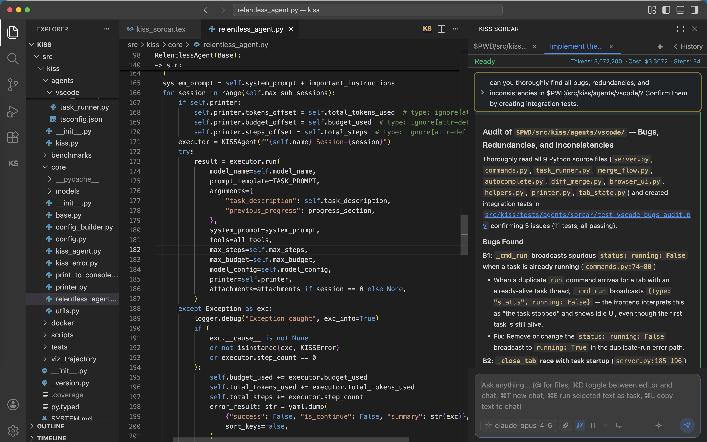

KISS Sorcar is a general-purpose AI assistant and IDE built on the KISS Agent Framework — a stupidly-simple agentic framework of ~1,850 lines of code. It codes really well and works pretty fast.
"Everything should be made as simple as possible, but not simpler." — Albert Einstein

Everything you need for real-world software engineering and general-purpose automation.
Automatic summarization and continuation across sub-sessions means the agent never gives up — it keeps working until the task is done.
Built-in Chromium browser via Playwright. Navigate pages, click elements, fill forms, take screenshots — all programmatically.
Every task runs on its own branch in a separate worktree. Your working tree stays untouched until you merge.
Execute tasks inside Docker containers for sandboxed, reproducible environments. Perfect for untrusted or experimental code.
Understands images, screenshots, and text. Attach visual context to your prompts for richer interactions.
See tokens, cost, and elapsed time at every step. Hard budget ceilings prevent runaway spending.
Automatically learns your preferences and project invariants across sessions via USER_PREFS.md. Gets better over time.
Use it as a VS Code extension with a rich UI, or as a command-line tool. Same powerful agent, your choice of interface.
Runs linters, type checkers, and tests before declaring success. No AI slop — just clean, idiomatic, well-tested code.
Each layer adds exactly one concern. ~1,850 lines of Python total.
Budget-tracked ReAct loop with native function calling. 409 lines.
Automatic summarization and continuation across sub-sessions. 297 lines.
Coding tools, browser automation, and parallel sub-agent execution. 323 lines.
Persistent multi-turn chat sessions with history recall. 120 lines.
Git worktree isolation — every task on its own branch. 692 lines.
All you need is a model API key from a major LLM provider.
— or —
Open VS Code → search "KISS Sorcar" in the Extension Marketplace → Install → Relaunch.
Or download the .vsix file directly.
Bring your own API key. Works with all major LLM providers.
Claude Opus 4.7, Opus 4.6, Sonnet 4.6, Sonnet 4, Haiku 4.5 and more
GPT-5.5, GPT-5.4, o4-mini, o3-pro, Codex series and more
Gemini 3.1 Pro, 3 Flash, 2.5 Pro, 2.5 Flash and more
Llama 4, Qwen 3.5, DeepSeek V4, Kimi K2.6, GLM-5.1 and more
330+ models from 50+ providers via a unified API
OpenAI, Google, Together AI embedding models for RAG and search
An overview of KISS Sorcar's capabilities.